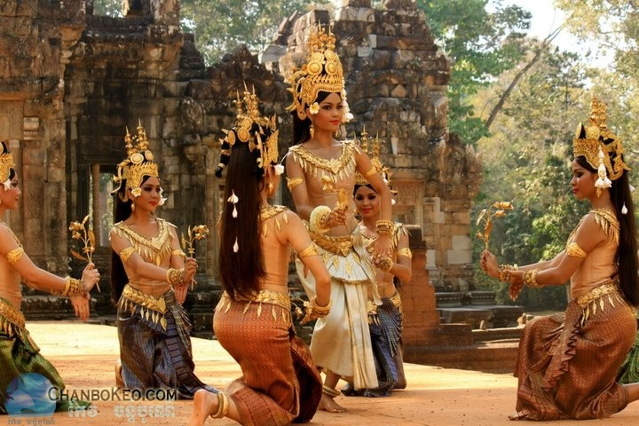

Explore Cambodia Culture

Rich Tradition
Cambodia’s traditions are deeply rooted in Buddhism and the Khmer Empire. Classical Apsara dance, colorful festivals like Pchum Ben, and spiritual practices reflect the people's respect for ancestors and community. Traditional arts such as Apsara dance, silk weaving, and shadow puppetry reflect the country’s spiritual and cultural identity. These customs are still alive today, connecting the past with the present.

Warm & Resilient People
Known for their kindness and hospitality, Cambodian people embody resilience shaped by a complex history. Villages are close-knit, and daily life often revolves around family, community, and tradition. Visitors are often welcomed with genuine smiles and open hearts, whether in rural villages or the busy streets of Phnom Penh. Respect, hospitality, and generosity define daily life.

Authentic Khmer Cuisine
Cambodian food is a flavorful blend of sweet, sour, and savory. Popular dishes like Amok (steamed fish curry), Bai Sach Chrouk (pork and rice), and Nom Banh Chok (noodle soup) offer a unique taste of Khmer heritage. Street food is vibrant and affordable, from crispy noodles to fresh tropical fruits. Every dish tells a story of tradition, family, and the Khmer way of life.